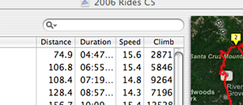

Searching in the browser
The Main Browser supports searching via the search widget (shown below). As you type text into the widget, activities that have titles containing the text typed are immediately displayed. You can also search by keyword or for text entered in the activity's "Notes" field by clicking on the magnifying class in the search widget, and choosing which field to search.
